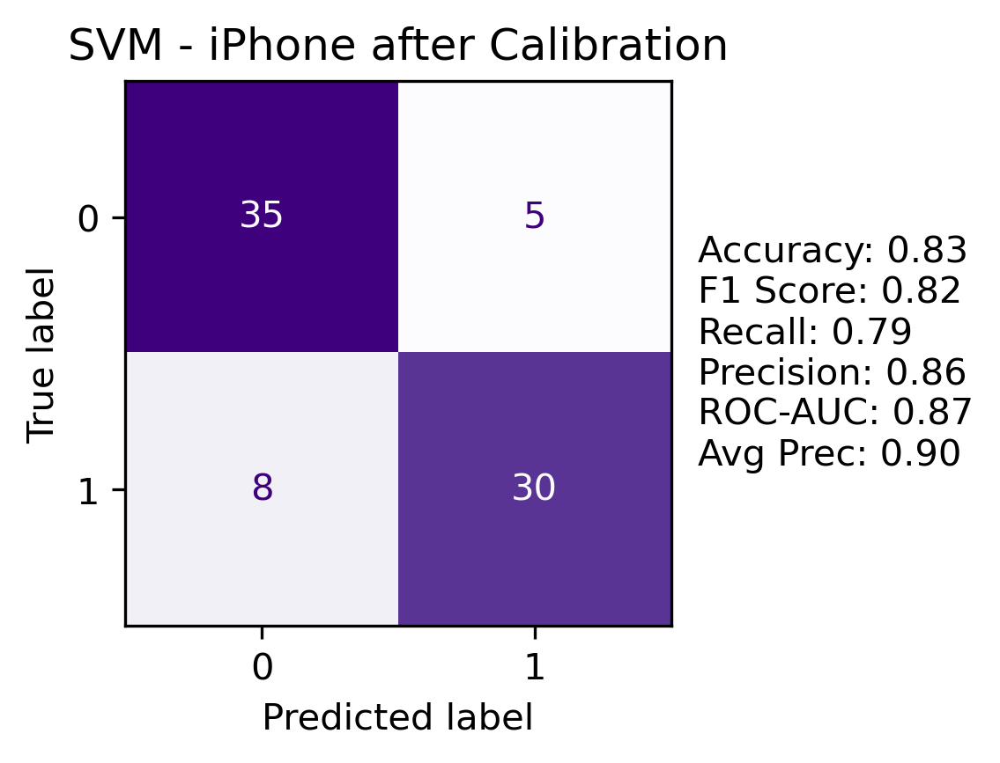

Support Vector Machines
Overview
Support vector machines are supervised learning models that focus on classification using a hyperplane (p-1 dimensional, with p being the number of data features). The model assumes the best choice of hyperplane is the one that has the largest margin (separation) between the classes. Because often the data is not linearly separable, SVM offers the ability to convert the data into higher dimensions (imagine points in 2D moving upward into the third dimension). This is computationally feasible given the kernel trick, which finds the dot products of the data points as if it was already in the higher dimensional space, and then finding the optimal hyperplane from there.
The above is a synthetic example of data that is not linearly separable in 2D, but is when transformed using a degree 2 polynomial. The following are the Kernel function and the feature mapping (new coordinates) of x into 3D.
\(K(x, y) = (x \cdot y)^2 = (x_1y_1 + x_2y_2)^2 = x_1^2y_1^2 + 2x_1x_2y_1y_2 + x_2^2y_2^2\)
\(\phi(x) = (x_1^2, \sqrt{2}x_1x_2, x_2^2)\)
We can see that the transformation allows for a hyperplane separation.
SVM models can be tuned using different hyperparameters. These include cost, C, which manages the allowance for misclassifications, where a higher C more harshly penalizes mis-classes but can lead to overfitting of the training data. Gamma (poly and rbf) measures the influence of training points depending on distance (high gamma means only close points have influence). And the coefficient (poly) is the bias term in the kernel function. Polynomial kernels also are dictated by degree (2, 3, 4) which can affect the curviness of the boundary.
Data [Top]
Data files are found here.
Since support vector machines compute dot products of feature vectors, only scaled numerical features were used in training these models.
num_features_iphone = ["seller.feedbackPercentage", "seller.feedbackScore", "days_listed",
"seller_item_count", "model_number", "additional_image_count", "title_length"]
num_features_lego = ["rating", "ratings_total", "recent_sales_num", "discount$",
"discount%"]
response = "is_high_price"
For all datasets, a train/test split was created (80/20%). All models were trained on the training set, and then a confusion matrix with metrics were evaluated on the test. This is a critical piece of model building and comparison, to not overfit the data and see performance on unseen data.
Code [Top]
A link to the full code for this analysis is found here.
Results [Top]
All models were tuned using a grid search of hyperparameters. The grid search uses cross-validation (set at cv = 10) and averages the accuracy results for each fold to determine the best hyperparameters on the training data. These are then used on the test set. Note that the grid search allows for different metrics to be considered, such as kernel (linear, poly, rbf), cost (0.1, 1, 10), gamma (0.1, 1 poly, rbf only), coef (0, 1 poly only), and degree (2, 3, 4 poly only).
params_grid = [{'C': [0.1, 0.5, 1, 5, 10], 'kernel': ['linear']},
{'C': [0.1, 0.5, 1, 5, 10], 'kernel': ['rbf'], 'gamma': ['scale', 0.1, 1]},
{'C': [0.1, 0.5, 1, 5, 10], 'kernel': ['poly'], 'degree': [2, 3, 4],
'gamma': ['scale', 0.1, 1], 'coef0': [0, 1]}]
classifier_iphone = SVC()
grid_search_iphone = GridSearchCV(estimator = classifier_iphone,
param_grid = params_grid,
scoring = 'accuracy', #this can be changed for different metrics
cv = 10,
n_jobs = -1)
The scoring parameter can also be adjusted depending on which metric to be emphasized, for example, accuracy, F1, or recall, among others.
iPhone
The iPhone data was modeled using SVM to classify High Price. The following are the results of the grid search cross-validation (top 5):
| SVM Parameters | Mean CV Score |
|---|---|
| {‘C’: 10, ‘kernel’: ‘linear’} | 0.759677 |
| {‘C’: 0.1, ‘kernel’: ‘linear’} | 0.759570 |
| {‘C’: 0.1, ‘coef0’: 1, ‘degree’: 2, ‘gamma’: 0.1, ‘kernel’: ‘poly’} | 0.750323 |
| {‘C’: 0.1, ‘coef0’: 1, ‘degree’: 2, ‘gamma’: ‘scale’, ‘kernel’: ‘poly’} | 0.750323 |
| {‘C’: 5, ‘kernel’: ‘linear’} | 0.750000 |
Cross-validation found the best model, based on accuracy scoring, was a linear model with a relatively high cost of 10. This means the data is linearly separable and there is a high penalization for mis-classed points. Note that the data is in 7D (seven numerical features) so visualizing the hyperplane is a challenge.
The model performed fairly well against the test set, with 76% accuracy.
One of the challenges with SVM is interpretation, especially when the kernel trick is used to transform the data into higher dimensions. All of the datasets have more than two features, so visualizing is also difficult. An attempt to visualize the decision boundaries on PCA reduced data is presented; however, still shows the challenges with this exercise.
There appears to be quite a few mis-classes from the above; however, this is likely due to the reduction of the data down to the first 2 principal components, and information is getting lost.
Additional analysis on the model was performed related to ROC-AUC and Precision-Recall and Calibration, using the CalibratedClassifierCV() function. ROC-AUC shows how the model ranks true positives above false positives and average precision represents the weighted mean of precisions and different recall levels. Precision is the model's ability to correctly identify only the relevant instances and recall is the model's ability to find all of the relevant instances. ROC-AUC and average precision uses probabilities from the model, with a 0.5 cut-off. The calibration allows the user to identify if a different threshold is better. Then, the y predictions can be updated to the new threshold (e.g. 0.62 instead of 0.5 to determine 0/1).

Updating the y-predictions based on a new threshold showed that accuracy and F1 score improved while recall came down.
Priority Listing Classification
In addition to using median price as the classification metric, the column Priority Listing (True/False) was considered as a classification response. It should be noted that the classes are imbalanced for the training data (compared with High Price classification which is based on the median value):
Training and testing sets:
(array([False, True]), array([229, 79]))
(array([False, True]), array([61, 17]))
So additional considerations are needed. In the SVC function,
class_weights="balanced” should be passed through. During the grid
search, instead of using “accuracy” as the scoring measure, one may
consider F1 or Recall, which may handle better when the minority class
is positive.
For the iPhone data, the grid search cross-validation found:
Best CV Recall: 0.7732142857142856
Best CV Parameters: {‘C’: 10, ‘coef0’: 0, ‘degree’: 4, ‘gamma’: ‘scale’, ‘kernel’: ‘poly’}
For the new response variable, a different model was chosen from CV, a degree 4 polynomial. The boundaries are more complex and curved than the data when the response was high price.
Similar to above, a calibration was performed based on probability thresholds, with the following noted:
Note that the raw SVM using recall as the scoring method suffered in accuracy as more false positives were noted. After calibrating, recall came down but accuracy improved significantly. Hyperparameters are the same because the model is not re-fit; rather, calibration is done post-hoc and attempts to adjust decision thresholds based on probabilities.
Soccer
High price classification was performed on the soccer data set using SVM with grid search. The following were noted:
| SVM Parameters | Mean CV Score |
|---|---|
| {‘C’: 10, ‘coef0’: 1, ‘degree’: 3, ‘gamma’: 1, ‘kernel’: ‘poly’} | 0.73375 |
| {‘C’: 5, ‘coef0’: 1, ‘degree’: 4, ‘gamma’: 0.1, ‘kernel’: ‘poly’} | 0.73125 |
| {‘C’: 10, ‘coef0’: 1, ‘degree’: 4, ‘gamma’: 0.1, ‘kernel’: ‘poly’} | 0.73125 |
| {‘C’: 1, ‘coef0’: 1, ‘degree’: 4, ‘gamma’: ‘scale’, ‘kernel’: ‘poly’} | 0.73125 |
| {‘C’: 10, ‘coef0’: 1, ‘degree’: 3, ‘gamma’: 0.1, ‘kernel’: ‘poly’} | 0.72875 |
Cross-validation found the best model based on accuracy was a degree 3 polynomial. The data is non-linear with curved boundaries.
Confusion matrix metrics were fairly strong and consistent.
Similar to the iPhone data, calibration, ROC-AUC and precision-recall was considered.
The soccer data initial SVM model follows the ideal calibration line better than the iPhone data. Running a CalibratedClassifierSV() model showed the best threshold was 0.45; the y predictions were then updated based on this, with the following metrics noted:
The metrics improved for the calibrated model, compared with the raw model. However, there were more false positives captured.
Lego
High price classification was performed on the Lego data set using SVM with grid search. The following were noted:
| SVM Parameters | Mean CV Score |
|---|---|
| {‘C’: 10, ‘coef0’: 1, ‘degree’: 2, ‘gamma’: 1, ‘kernel’: ‘poly’} | 0.863333 |
| {‘C’: 10, ‘coef0’: 0, ‘degree’: 3, ‘gamma’: 1, ‘kernel’: ‘poly’} | 0.855833 |
| {‘C’: 1, ‘coef0’: 1, ‘degree’: 3, ‘gamma’: 1, ‘kernel’: ‘poly’} | 0.855417 |
| {‘C’: 10, ‘coef0’: 1, ‘degree’: 3, ‘gamma’: ‘scale’, ‘kernel’: ‘poly’} | 0.849583 |
| {‘C’: 10, ‘coef0’: 1, ‘degree’: 3, ‘gamma’: 1, ‘kernel’: ‘poly’} | 0.849167 |
Based on the cross-validation results, the best performing model based on accuracy was a degree 2 polynomial. This indicates a non-linear separation, but less curved than the soccer data.
The model performed well based on all metrics.
As with the iPhone data, an attempt to visualize the decision boundary was created:
One can see some separation of the classes; however, it remains a challenge visually as only two dimensions can be plotted.
Top Theme Classification
Another classification response was attempted, Top theme, which is based on certain brand names extracted from the title field from the original data. The same numerical features were used, except price is now added as a feature.
The classes are unbalanced in favor of the positive class (training/test sets, respectively):
(array([False, True]), array([ 31, 121]))
(array([False, True]), array([ 9, 29]))
Because of this, the class_weights parameter was used in the
model and different scoring options in the grid search were used,
including accuracy, balanced accuracy, and F1.

None of the models captured the true negatives (minority class) particularly well, but balanced accuracy scoring was better than the others. The hyperparameters found in CV were different based on scoring method. Ultimately, classifying a listing based on top theme did not prove to work especially well with these models.
Summary [Top]
Support vector machines offer flexibility with hyperparameter tuning depending on the data sets, and even within the same data sets, differences were found when considering alternative response variables. All models performed relatively well across the data.
The grid search scoring (e.g. F1, recall, accuracy, etc.) option is a way to emphasize certain metrics depending on what the model is classifying. For example, in a model that requires a certain level of recall (like fraud cases), the “recall” scoring method should be used when searching for the best hyperparameters to be used in the model. Then, the calibration process after the model is built can be used in further analysis of decision levels (probability thresholds). It should be noted that only focusing on one metric can impact the overall performance of the model.
SVM are not able to capture categorical features (or binary features well, because the distance is not meaningful), so there is a limit with this particular data, that other models like Random Forests could overcome. Nevertheless, the flexibility of SVM offers a solution to modeling product listings across online retail sites.